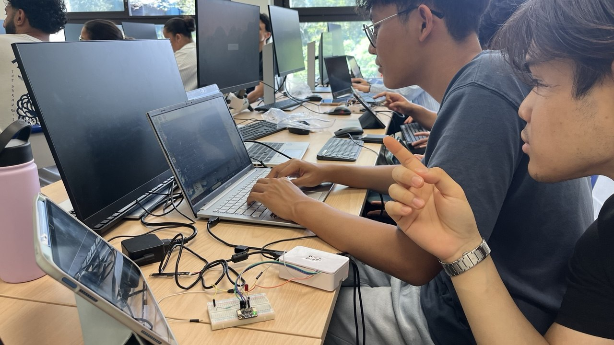

SAÉ24développement web · infrastructure
SAÉ24 — Banc Avionique
Projet intégré autour d’un système de suivi des modifications d’un banc avionique. L’objectif est de prendre des photos, stocker les informations en base de données et suivre l’évolution des modifications via une interface web.
découvrir →